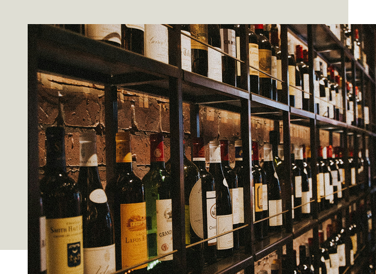

giardino segreto
Culinary Journeys
HOUSE ICONS
Risotto del Bosco
Carnaroli rice creamed with "Guíscanos (wild saffron milk caps) harvested in Cazorla, finished with black truffle shavings and mountain butter.
The Hunter s Ragù
Hand made Tagliatelle served with a robust slow cooked stew of Cazorla Wild Boar, juniper berries, and a dark cocoa reduction.

Venison Tagliata
Seared Red Deer loin from the Sierra, served on a bed of arugula, cherry tomatoes, and flakes of Pecorino Romano.
Oro Verde Gelato
A daring artisanal ice cream made with Premium Royal Olive Oil from Cazorla, served with a pinch of Maldon salt and crystallized pine nuts.
Wine List
Carefully curated by our expert team of wine professionals, our cellar holds over 400 references. A liquid journey bridging the intense sun of Andalusia with the mist of the Italian hills.
Reds
Mala Ostia (Jaén, Spain)
2020 - Syrah & Merlot, bold and fruity.
Campoameno Syrah (Jaén, Spain)
2022 - 100% Syrah, light oak aging.
Prosecco Superiore di Cartizze DOCG (Veneto, Italy)
2018 - Bright and crisp, with delicate floral notes.
Chianti Classico Riserva (Tuscany, Italy)
2019 - Sangiovese, savory and elegant.
Marcelino Serrano (Jaén, Spain)
2020 - Garnacha and Tempranillo, a mature and smooth wine.
Whites
Blanca María (Jaén, Spain)
2022 - Chardonnay blend from Sierra Sur.
Vega Badenes Verdejo (Jaén, Spain)
2023 - Fresh, aromatic, and crisp.
Pinot Grigio Alto Adige (Italy)
2020 - Syrah & Merlot, bold and fruity.
Vermentino di Gallura (Sardinia, Italy)
2022 - Saline notes with citrus.
Frizzantes
Campoameno Frizz (Jaén, Spain)
NV - White, semi-sweet, and bubbly.
Moscato d'Asti (Piedmont, Italy)
2022 - Sweet, peachy, and gently sparkling.